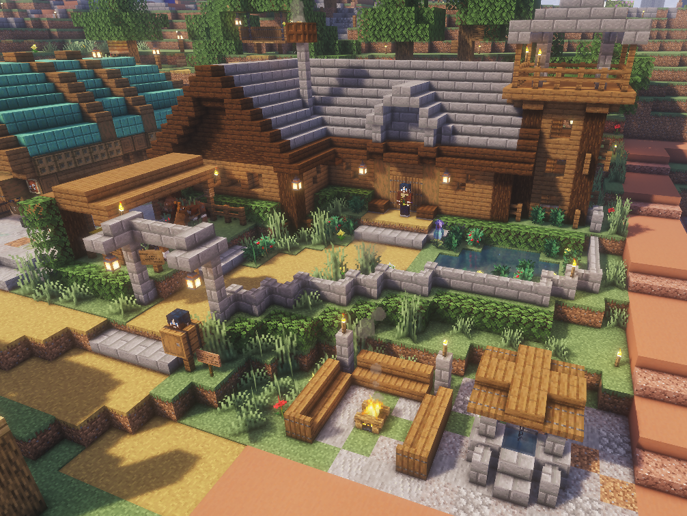
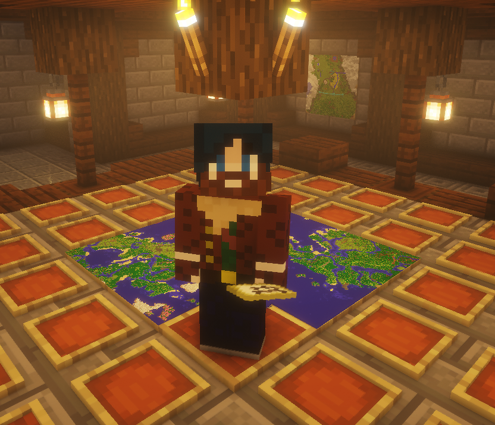

Le Relais Cartes&Co

Le Relais Cartes&Co est un lieu pensé pour les voyageurs, explorateurs, marchands et habitants en quête d'informations sur le monde.
On y consulte les cartes, on prépare les itinéraires, on échange des nouvelles des routes et on découvre les lieux importants recensés par Cartes&Co.
Vince y propose également ses services de cartographie. Cartes à la demande possibles à l'atelier. Contactez Vince Lance, Mahyster (Twitter).
Vince Lance

Vince Lance est le fondateur de Cartes&Co. Cartographe, explorateur et observateur du monde, il cherche à rendre les territoires plus lisibles et accessibles à tous.
Cartographe dans l'ancien monde, il a malheureusement laissé tout ce qu'il avait de plus cher derrière lui pour parcourir ces nouvelles terres.
Son objectif est simple : aider le peuple à se repérer, découvrir de nouveaux lieux et être une référence de la bonne humeur et de la dipomatie.
Objectifs de l'Atlas
- Cartographier progressivement le monde connu.
- Répertorier les villes, domaines et lieux importants.
- Faciliter les trajets et les rencontres entre joueurs.
- Préserver une trace visuelle de l'évolution du monde.